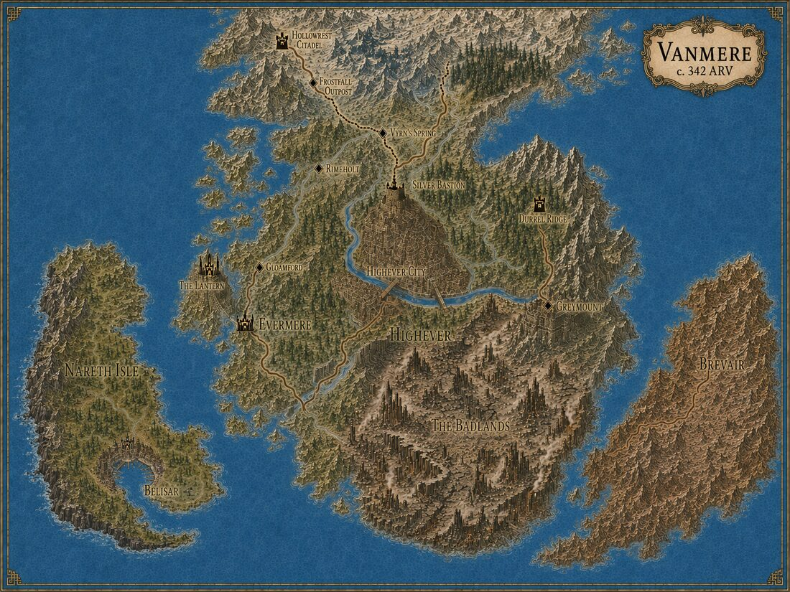

Amora has ended once and begun again. This ledger tracks both histories — the completed cycle of Timeline A, and the reforged world of Timeline B born from its fracture — across founding, dominion, machine, and cyberpunk ages, from 0 ARV to the Fracture and back to 0 ARV once more.

The Durrel bond is struck at Silver Bastion and the world spends nine ages discovering what devotion becomes when it hardens into rule — empire, machine, republic, and neon — before folding back on itself.
Six travellers from the end of Timeline A land at its beginning. Taren and Zethyr are unmade before the Dominion can ever form — but the world still finds new ways to build succession around powerful bonds.
Full biographies for every protagonist and their partners, both timelines.
Every region traced campaign by campaign, plus the interactive map viewer.
The Seals, the Ley-Heir cycle, and Timeline B's resonance system explained.
Orders, institutions, and the doctrines that rose and fell across both timelines.
The objects and sites with real world-historical weight, across every age.
Deep history — the Oath Wars, the Shattering, and what came before Campaign I.